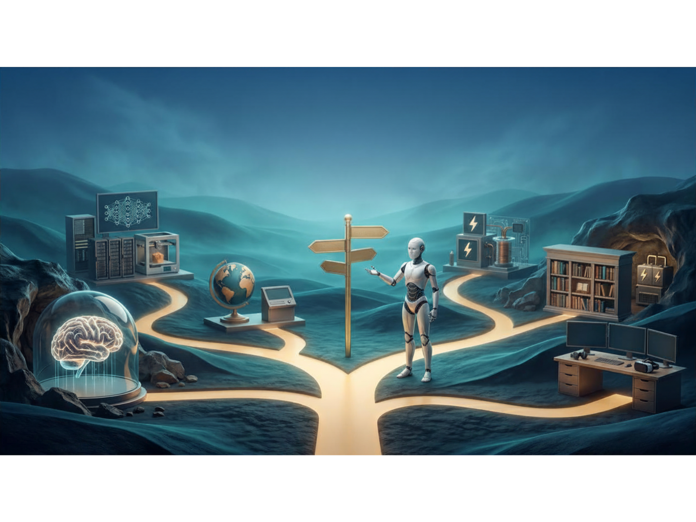

AI a asistenti
AI pomocníci a praktické návody pro přípravu výuky.
Kudy dnes povedete výuku?
Klikněte na některou oblast mapy nebo si projděte přehled všech nástrojů pod ní.
Interaktivní mapa s pěti oblastmi: AI a asistenti, Angličtina, Elektro, Tvorba materiálů, Audio a video. Klikněte na zlatý kruh v příslušné oblasti pro zobrazení odkazů.

AI pomocníci a praktické návody pro přípravu výuky.
Slovní zásoba a procvičování pro hodiny angličtiny.
Interaktivní simulátory a výukové aplikace pro elektrikáře.
Rychlá příprava přehledných podkladů a prezentací.
Promyšlená zadání pro audio a video výstupy.
Tento rozcestník propojuje výukové materiály, AI návody, tematické přehledy a vibecodingové aplikace na jednom místě.
Sbírka předpřipravených Gemini Gemů pro učitele i žáky – od plánování výuky po tvorbu materiálů a podporu učení.
Přehledné procvičování slovní zásoby z učebnice Maturita Solutions Elementary a Pre-intermediate.
Praktický průvodce NotebookLM pro učitele s návody, prompty, use cases a ukázkami využití ve výuce.
Sbírka interaktivních cvičení pro výuku angličtiny vytvořených pomocí vibe codingu.
Interaktivní aplikace a výukové nástroje pro obor Elektrikář vytvořené pomocí vibe codingu v AI Studio Builderu.
Bezpečná digitální dílna pro budoucí elektrikáře s mikrolekcemi, interaktivními úkoly, testy a ukládáním pokroku.
Pomocník pro přípravu kvalitních promptů pro tvorbu infografiky v NotebookLM.
Nástroj pro tvorbu promptů pro prezentace v NotebookLM, který pomáhá připravit jasné a dobře strukturované zadání.
Nástroj pro tvorbu promptů pro audio a video výstupy v NotebookLM, který pomáhá připravit jasné a dobře cílené zadání.